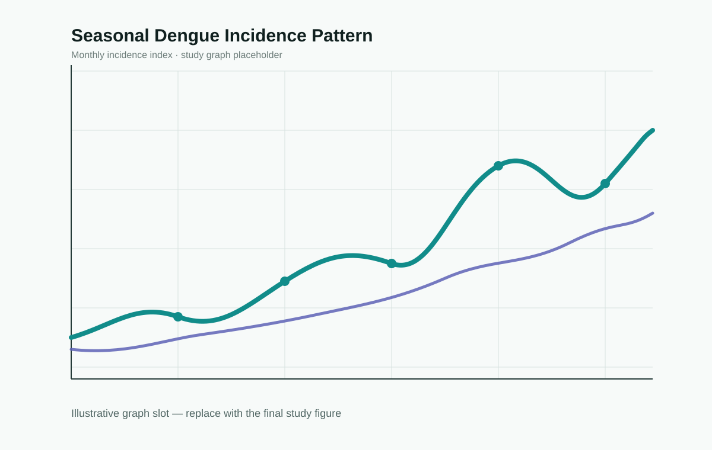

Study graph · replace with final figure
01
Consultancy-led epidemiological study
Urban Dengue Incidence & Seasonal Transmission Study
A population-level epidemiological investigation examining how dengue incidence changes across seasons, locations and transmission periods. The study showcase can present incidence curves, epidemic peaks, spatial clusters or intervention-period comparisons from the final analysis.